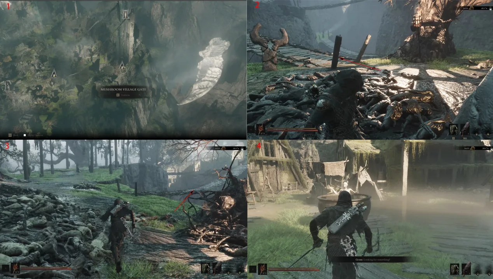
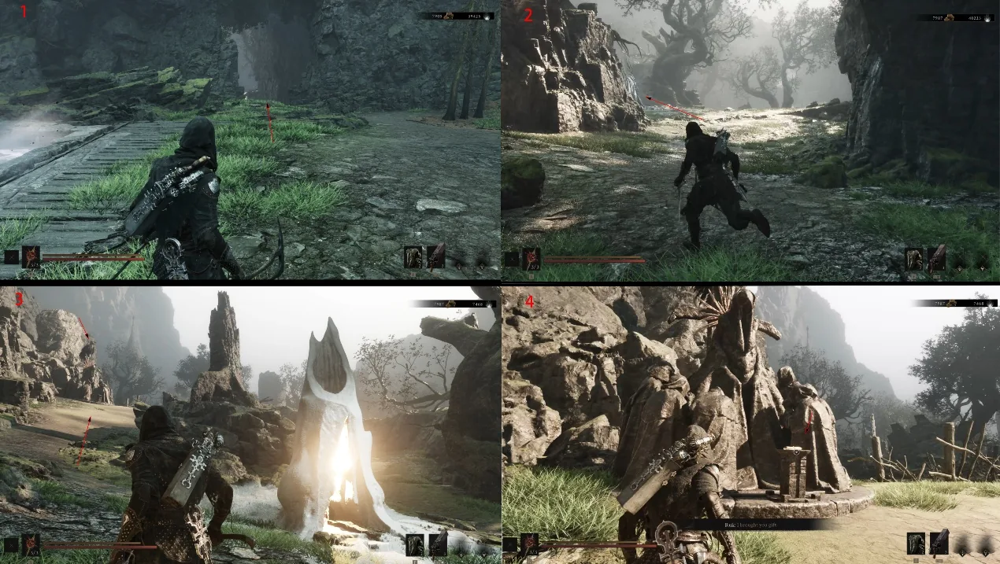
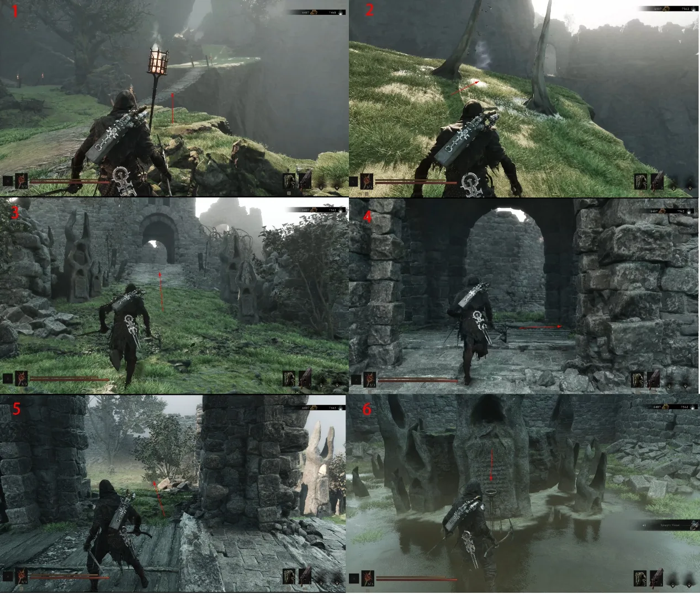
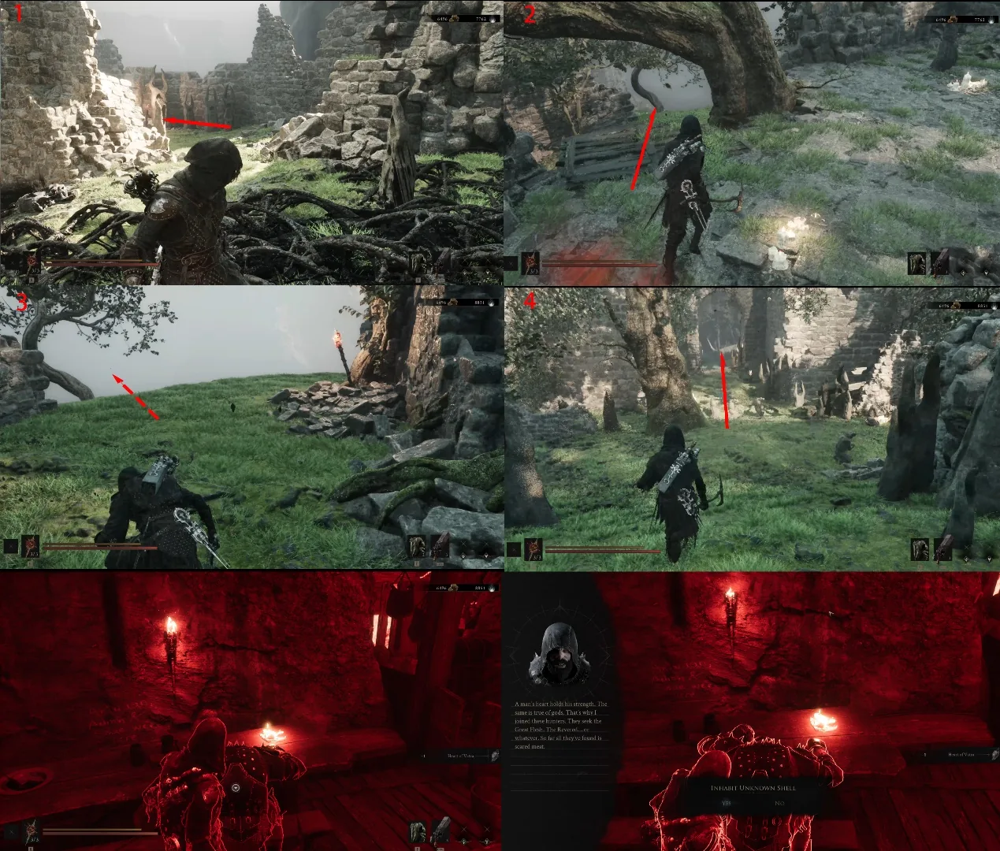

Follow this captured route from Mushroom Village to the One-Legged Wolf Tavern, then complete the Heart of Vatra exchange to unlock Gragu.
Region
Fainweald
Key item
Heart of Vatra
Unlock
Gragu

Route 01Travel to Mushroom Village Gate and enter the courtyard. Speak with Grom to begin this route.Route 02Use the rear of the courtyard, clear the enemies around the corruption and leave through the marked gate.

Route 03From the Deserted Mine, follow the route through the cave toward the One-Legged Wolf Beacon. Speak to Ruk and take the Map of Fainweald below the Beacon.Route 04Return to the Beacon and take the right-front route into the One-Legged Wolf Tavern. This stop also contains the Troubadour's Lute, Hand of Rock and Common Moonshine interactions.

Route 05Leave the tavern, cross the bridge on the right and continue to the Temple of Vatra. The right-hand route holds a Synaptic Vessel; follow the marked detour for the Sheephead Totem.Route 06Take the left route shown and complete the three Make Offering interactions to open the Treasure. Return to the main path and collect the Heart of Vatra.

Route 07Use the Heart of Vatra at the revival point, clear the revived statue encounter, then follow the four marked return panels to the tavern. Speak with Gragu and choose the official Give Heart interaction to unlock the Shell.